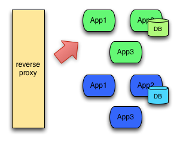
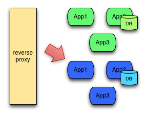
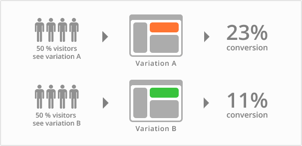
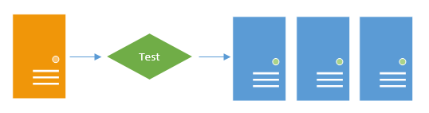
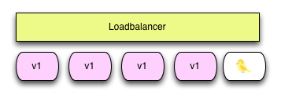
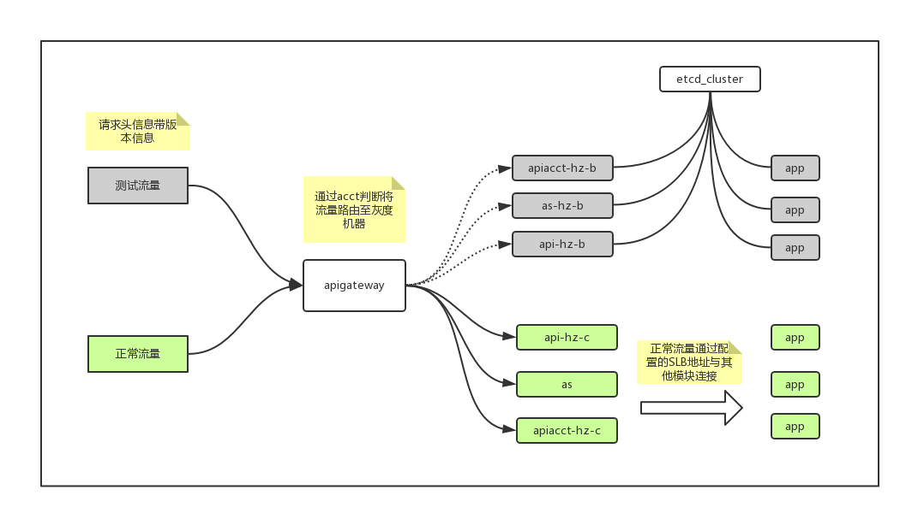

name: inverse layout: true class: center, middle, inverse --- # Canary [灰度发布二期] .footnote[yunzhou.wu@pingxx.com] --- layout: false ### 认识一下金丝雀 --- ### 几个问题 - 灰度发布二期的目标是什么？ - 什么是 蓝绿 / AB 测试 / 金丝雀？ - 第一入口？ - 灰度发布对业务代码的侵入性？ - 自动化，相信人 or 相信机器？ - 完成这一切，需要做什么？ --- ### 喜闻乐见 --- ### 灰度发布二期的目标 - 控制风险！ - 按照规则渗入真实流量 - 状态机以及工作流 - 状态切换：开始 / 暂停 / 暂停中 / 终止 / 终止中 / 发布顺利 / 发布失败 - 工作流：发布过程中，放入流量规则以及速度 - 自动化发布，“傻瓜点击式发布”，“钉钉发布助手” - 继续 -》 继续 -》 继续 - 发布助手直播发布过程，结束 “发布全靠吼” --- ### 蓝绿 / AB 测试 / 金丝雀 - 蓝绿： - 将线上应用发布成为 蓝/绿 两个部分 - 使用不同入口进行验证，通过之后切换 - AB 测试： - 用户按照规则使用不同的版本 - 从统计结果看出不同版本带来的差异化（API 接口优化，转化率） - 金丝雀： - 同时能满足 蓝绿 / AB 测试 - 多版本的并存，可控的流量控制（百分比） - 风险的控制，从优先级别最低的流量源头开始 --- ### 蓝绿 <br> 切换版本：  --- ### AB 测试 不同版本的反馈：  --- ### 灰度发布 真实流量充当测试的一环：  网关之下，渐进式发布：  --- ### 第一入口 - 第一个流量入口，必须要分流到对应的机器 - 使用域名从源头分流 - 使用网关 - 网关承担到更多的责任： - 需要灰度 Account 列表的维护 - 对 Header 的修改  by wuwg --- ### 灰度发布对业务代码的侵入性 - 在任何时候我们都希望不侵入业务代码 - 不可避免的侵入 - 网关的业务侵入 - RequestID, DeployVersion 的传递 - 维护发布版本号 - 控制好侵入性 - 将维护成本限制在一个入口，减少冗余（Gateway / Notify） - 后续开发者不需要太多心智负担（common-go/client） --- ### 自动化 - 自动化是面对规模化的必经之路 - 假设我们有 100 台机器 - git Webhooks 触发 - testing -》canary deploying -》monitoring -》deploying - 在可靠性方面，我更相信机器 - 机器不受情绪影响 - 人的沟通成本复杂度是 (n^2) - 机器具有更可靠的迭代性 - 人员的变动不可预测 - 日臻完善，持续改进 --- ### 完成这一切，需要做什么 - 运维的支持： - 获取线上拓扑结构 - 应用发布接口（需要明确的反馈，可添加业务监控支持） - 灰度 Account 账户维护接口 - SLB 调整接口 - 当前发布版本号维护接口 - Dashboard - 测试账号的维护 - 不同优先级活跃 Account 列表的导出 --- ### 链接 <a href="http://docs.system.pingxx.com/pages/viewpage.action?pageId=42991754">灰度测试验证方案</a> <a href="http://docs.system.pingxx.com/pages/viewpage.action?pageId=44794179">灰度发布二期</a> ### 例子 - whoami 应用 - 发布 demo --- ### 私货 我们终究要走向 K8S： <img src="kubernetes.png" width="500"/>